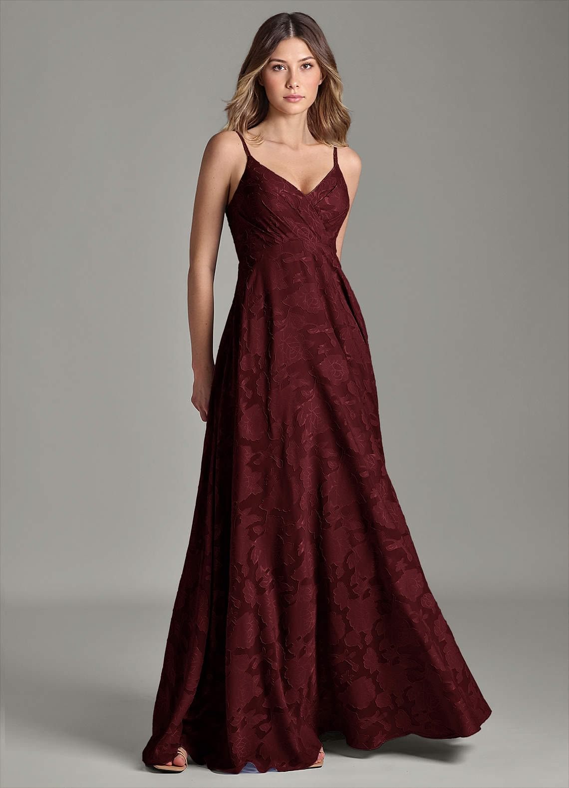
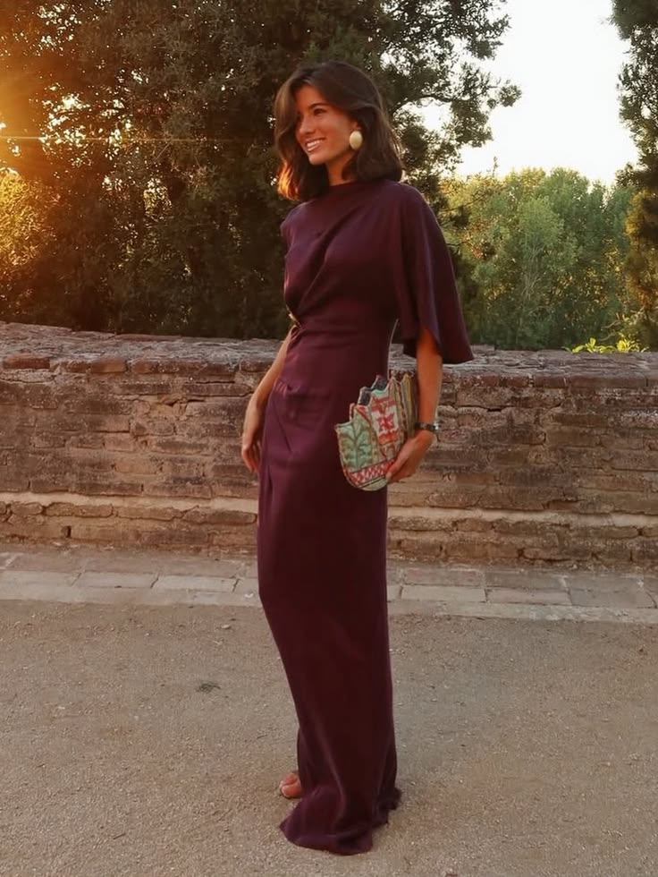
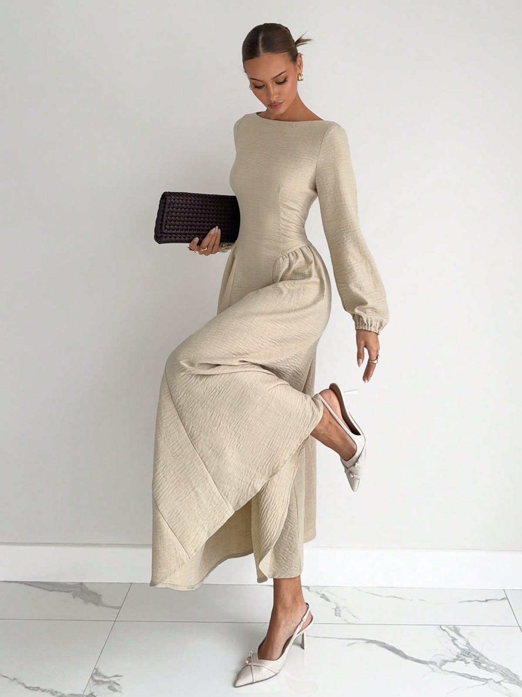
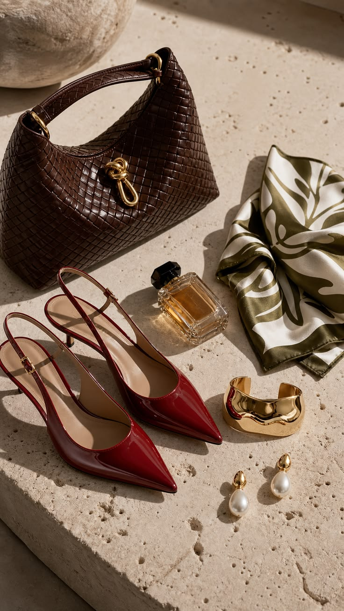

La robe en dentelle
Une robe longue bordeaux, avec des motifs en relief. Ça fait habillé sans en faire trop, et ça va aussi pour un baptême avec des accessoires dorés.
Édition automne 2026
Des idées pour un mariage ou un baptême, aux couleurs de la saison.
Pour un mariage en automne, j'aime bien une robe en dentelle bordeaux. Prends-la doublée pour qu'elle ne gratte pas, et assez fluide pour rester à l'aise toute la journée.

Une robe longue bordeaux, avec des motifs en relief. Ça fait habillé sans en faire trop, et ça va aussi pour un baptême avec des accessoires dorés.

L'aubergine et le bordeaux vont bien à cette saison. Le beige, le vert sauge et le rose poudré restent plus doux. On évite le blanc pour un mariage, et le tout noir pour un baptême.
Pour un baptême, je prends une robe fluide de couleur douce (jamais blanche), avec les épaules couvertes pour la cérémonie, et des chaussures confortables : talons larges ou ballerines.

Une robe midi beige, fluide, avec des manches. Facile à porter toute la journée.

Pas besoin de beaucoup d'accessoires : un petit sac, un foulard et un bijou discret. Des escarpins pas trop hauts pour tenir jusqu'au soir.